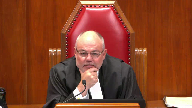

Her Majesty the Queen v. David Roy Langan
This transcript was made with automated artificial intelligence models and its accuracy has not been verified. Review the original webcast here.
Justice Abella (00:00:24): Good morning, everyone.

Thank you, lawyers in British Columbia, for getting up so early for this hearing, but we appreciate it.
This is Her Majesty the Queen versus David Roy Langan, Jeff Baragar for the appellant, and Lauren Chu, Christine Bartlett-Hughes for the intervener, the Attorney General of Ontario, Jerry Steele, and Elliot Holtzman for the respondent, David Langan, Adam Weisberg for the Intervener Criminal Lawyers Association, Eric Pertsky for the Intervener Independent Criminal Defense Advocacy Society, and Daniel Summers for the Intervener Canadian Association for Equality.
Mr. Baragar, have I pronounced your name properly, sir?
Have I pronounced your name properly?
Yes, I was just unmuting.
Yes, thank you. Okay.
Speaker 1 (00:01:24): Justice Abella.
Justices, I shall begin.
There are two principal issues of concern in this appeal.
The first is the use of prior consistent statements, and the second being what triggers the requirements of a Section 276 admissibility hearing.
That is, what constitutes evidence of prior sexual activity.
And a third ground of appeal was whether the judge erred in his application of the WD principles, but given my limited time this morning, I will rely on our factum for that ground.
Now, the evidence which gives rise to both principal issues in large part stems from text messages that were exchanged between the complainant and the respondent, both prior and after the offence.
And it’s the text messages that were sent after the offence which raised the issue of prior consistent statements, and they’re referred to as the post-visit texts.
The other issue, while not raised as a ground of appeal in the court below, the majority found that the pre-visit texts leading up to the weekend intimated of sexual, prior sexual activity, and should therefore have been the subject of a Section 276 admissibility hearing.
Now, I’ll begin my submissions with a discussion of the post-visit texts and the issue regarding prior consistent statements.
Now, in a typical situation, a prior consistent statement is usually one made to a third party, such as a friend, a medical professional, or a police officer, about the offence prior to the witness giving similar evidence in court.
And as such, it may be considered hearsay, but it is also regarded as having little probative value, and the danger being that it may be relied upon by the trier of fact to confirm the in-court testimony through repetition, and as well it being a form of self-corroboration.
The post-visit texts in this appeal are of a different nature.
These were texts that were sent directly to the respondent who had an opportunity to challenge them in real time, and they contain virtually no information about the sexual assault which resulted in her pregnancy.
I’ll just give a very brief background.
The respondent had travelled to Vancouver Island to visit the complainant and their son for the occasion of Lake Cowichan Day, which was a local community festival held in mid-June.
Now at this point, any romantic relationship between the two was over, and the complainant had made it clear that she did not want to be engaging in sex over that weekend.
The substance of the offence was that the complainant testified that upon their return home on a Saturday evening from the community dance, that the respondent attempted to engage her in sex, but she successfully, and at one point forcefully, rebuffed his advances, and thereafter she fell asleep.
It was the respondent’s evidence that they did engage in consensual sex and that the complainant only said no once he went to retrieve a condom.
The principal allegation in this case was that the respondent impregnated the complainant after she had fallen asleep, and she was unaware of this until she discovered that she was pregnant some weeks later.
And remembering back to their last encounter, she telephoned the respondent and asked him whether something had happened, at which point he said no, that nothing had happened.
In late July, the complainant underwent a dating ultrasound which confirmed for her that conception had occurred during that weekend.
And she then confronted the respondent by text, accusing him that when he had said nothing happened, that he had lied to her.
And she confronted him by text, and the complainant’s texts, which I’ve set out at tab six of the condensed book, these are the post-visit texts, in my submission, they clearly display her anger and emotion at finding out that he betrayed her after her explicitly telling him that there was to be no sex.
And the respondent’s texts back to her contain a number of admissions against interest, acknowledging that, for instance, that she had told him no multiple times.
Now, substantively, as I said, the complainant’s texts say very little about how the events of the night unfolded.
It’s rather she accuses him of having impregnated her and things like no means no, and that she’d said that multiple times.
And it is these texts that the majority found to contravene the rule against prior consistent statements.
Now, as is set out in our factum, and the factum of the AG Ontario, there are recognized exceptions to the presumptive inadmissibility of prior consistent statements.
And it’s the appellant’s submission that the post-visit texts were admissible under three of these exceptions.
The first being that they were admissible to provide context to the respondent’s admissions against interest, and that was acknowledged by both the majority at paragraph 43 of the Reasons for Judgment and the Chief Justice in Dissent at paragraph 82.
The second basis for admissibility of the post-visit texts was that they came under the narrative as circumstantial evidenced exception.
And I’ve included the frequently cited article by Justice Pachacko, and I’ve included that in full at tab nine of the condensed book.
Justice Brown (00:07:48): Mr. Barager, your time is limited, so I don’t want to distract you, but I do want to signal to you that, speaking solely for myself, I’m not so interested in the basis on which those texts were admitted, but on the use that you say the trial judge made of them.
Speaker 1 (00:08:12): Yes, and I’m coming to that very shortly, so I’ll just…
Overlapping speakers (00:08:16): Quivering with anticipation, I’ll wait for you.
I’ll wait for you.
Speaker 1 (00:08:19): that so the the appellant’s position is that essentially there were three bases for admission first as admissions against to provide context the admissions against interest second under the narrative circumstantial evidence exception which also the majority accepted as did the dissent and third as pointed out by the chief justice that they could be used to counter the friendly text sent by the defense in immediately following the the weekend and which relied upon the defense to demonstrate that everything was fine and that the complainant showed no remorse simply because uh nothing untoward had happened and that as well is addressed that the use of them in that sense to knock out the defense or the opposing party’s use of them to discredit the witness is addressed by pachaco in that same article at paragraph 213 now and i think this is going to your point justice brown the issue in the court of appeal was not so much whether they could be used but whether the trial judge relied on them for the impermissible use of bolstering the complainant’s credibility and obviously the the particular line and the reasons giving rise to that concern concern was it paragraph 34 of his honor judge cutler’s decision from the provincial court wherein he had said her testimony was also consistent with her text messages in setting out her recollection of how the night unfolded as well as illustrating both her anger and emotional state now the as i’ve said the in the pound submission it appeared to be recognized they were admissible but um

and i would state that certainly had the judge stated that the complainant’s testimony was also consistent with the text messages instead of her text messages it certainly would have better reflected the both the evidence and the submissions of counsel as to the use that could have been made of those and now in sterling this with one of the seminal cases which i’ve included it tab two of the condensed book certainly at paragraph 13 this was a case where the trial judge had also it was alleged to permissibly use the impermissible um for the impermissible purpose by reason of referring to their consistency and certainly at paragraph 13 mr justice bastarash had found that the precise meaning of these passages was ambiguous but that the ambiguity ambiguity should be resolved by looking at the remainder of the judgment and looking at as a whole and stated that it’s inappropriate for the appellate court to read a single passage out of context and the reasons as a whole must be evaluated in order to determine whether an error has been has occurred now in this case the majority at paragraph 38 of the reasons had written based on the brief reasons for judgment read alongside the record the judge impermissibly used the post visit text to corroborate the complainant’s account
but it’s the appellant’s submission that the majority misapprehended that record in support of its analysis
and i begin i address this beginning at paragraph 87 of the appellant’s factum and the majority had found at paragraph 48
and i i’ve included that separately at tab 8 of the condensed books they concluded that the judge’s reasoning became of concern when evaluated in the context of comments made by the judge and the crown during closing submissions particularly to the effect that the crown had put the text messages before the court to see if they can corroborate the complainant’s position in this however as set out at paragraphs 89 to 93 of our factum a review of the closing submission shows that the judge and the crown were only referring to the respondents admissions and in the excerpts which i have included at paragraph 93 of the factum crown council repeatedly submits that it is the complainant’s testimony which is supported by the admissions against interest found in the respondents texts again that’s at paragraph 93 of of the appellant’s factum and as noted at paragraph 94 at no point during those submissions does the crown ever suggest that the complainant’s text could be used to bolster her in-court testimony now this is a very different situation in my submission from the circumstances as found in say cases such as as bz which was included at tab 4 of the hd ontario’s factum where both the crown and the judge explicitly stated that the prior statement in that case an email could be used to corroborate the complainant’s in-court testimony because of the consistency because of the repetition so this isn’t a situation here crown council specifically submitted that it would be the risk her testimony his admissions so to conclude on this point
Justice Kasirer (00:14:07): Before you conclude, Mr. Varagut, just so I understand, I do appreciate your comment in respect of paragraph 48 of the majority reasons, that when you look at the record, it does look like the Crown was relying on the respondent’s text.

But is it not fair to say that there were comments made before the judge in the submissions that are a little less clear?
I’m thinking at the bottom of page 89, and the bottom of page 88, and the bottom of page 89, where it’s, Mr. Feldthusen says, however much of what she says that is crucial to the Crown’s case is corroborated by the admissions in the text and the things said in the text messages.
And a little later, and I’m asking Your Honor to accept that as a fact because it is consistent with what she said before the weekend started and is consistent with the text messages.
It’s not entirely clear, at least on my reading, that the comments are confined to the respondent’s text.
Is that mistaken?
Speaker 1 (00:15:25): And I would, and that’s clearly what the majority picked up on, but I would respectfully take issue with that, in that I believe that a reading of the submissions as whole will show, and again, as I say, we tried to set out the specific examples, but certainly as a whole, and in the first comment, the exchange that occurred between the trial judge and the Crown, it was absolutely clear that what the judge was referring to, this was in correspondence with, or in commentary with the Defence Council, it was clear that he was only referring, when he said these texts, to those of the accused, the respondent.

And in the Crown’s submissions, which are quite extensive, he goes to some length, and now in large part, because I think the Crown at trial was concerned about the quantity of alcohol that the complainant had consumed, and so would this affect her reliability going back?
And so his focus was saying, look, the respondent’s texts, his admissions made in those, that’s what corroborates her testimony, and certainly at no point, as I said, does the Crown suggest that it’s through repetition, the very essence of what makes prior consistent statements presumptively inadmissible, at no point does he rely upon that.
And so as I say, just to conclude, in this case, first, there was a legitimate basis for admissions of the text, as recognized by both the majority and the dissent.
Secondly, Defence Council at trial asked, it was Defence Council that asked that all of the texts be entered into evidence for completeness, and then used those texts to show that the complainant’s immediate post-defence conduct was inconsistent with their having been an assault.
Three, the texts themselves contain very little in the way of details about the assault.
And again, the whole point of a prior consistent statement is that the prior statement is corroborating the in-court testimony.
But here, the prior statement says very little about the underlying offence.
Justice Kasirer (00:17:46): Mr. Barragar, just to, so your point is that the majority was wrong when they said it’s not entirely clear how the judge used the text messages?

I mean, should the judge have provided sufficient reasons that would have been, made appellate review viable?
Should he not have said why he was, how he was using the texts?
Speaker 1 (00:18:15): There’s, Justice Cussier, there’s, I think, no question that the reasons in this case were brief.

This was a two-day provincial court trial.
But certainly, and as pointed out, as I referenced Mr. Justice Basterasch’s comments in Sterling about any ambiguity, and perhaps here, if there was an ambiguity that triggered the concern of the majority.
But certainly, in the Conn case, there was an ambiguity of the wording.
Mr. Justice Horrigan from the Ontario Court of Appeal specifically addressed that and said, while the reasons could have been a little clearer, a reading of the record as a whole made clear that it wasn’t for just the consistency.
More recently, in the CMM case, which I have included in our authorities, Madam Justice DeWitt Van, well, sorry, yes, Madam Justice DeWitt Van Oosten, in that, was a very similar situation in that the trial judge had referred to the prior statement, which was more the classic prior statement made to a friend saying, he raped me, had used that to confirm her testimony.
So very much a clear confirm.
However, Madam Justice Oosten finds, and I believe this was at paragraph 156, she says, in my view, it was the circumstantial evidence as a whole that the judge found, in quotation marks, confirmed the incident.
In other words, when looking at the record as a whole, it actually was used under the narrative of circumstantial evidence exception, even though in both the Conn case and the CMM, the trial judge did not recognize it as such.
And the wording could have been interpreted as on, if one only looked at that statement, that they were using it for an impermissible purpose.
Madam Chair, good night.
Justice Kasirer (00:20:15): Can I ask one one follow-up question?

Thank you.
I’m sorry to belabor this if we look at justice Chief Justice Bauman’s Comments on paragraphs 103 and 104 where he where he Averts to how the trial judge used the evidence in question he says 104
Speaking to this very paragraph that you had alluded to earlier There are strong indications that the judge only used the evidence for the purposes for which it was admissible What what in your view are those strong indications?
Speaker 1 (00:20:59): I think what I’ve just elaborated on, Justice, in that being, that because the majority, they themselves point to an ambiguity.

They said it wasn’t clear, but based on the record.
And in my submission, it was a misapprehension of the record in the two specific examples that they point to.
In each of them, it’s a misapprehension of what was actually taking place.
First, between the commentary, the exchange that occurred between the trial judge and the defence counsel.
And secondly, their reference to the Crown submissions.
The Crown did not rely upon the prior state of the post-visit texts to corroborate her in-court testimony by reason of repetition.
Now I note the time, briefly, I’ll turn to now the pre-visit texts and the Section 276 issue.
Now there’s no question that the respondent and the complainant were in a prior relationship and had a child together.
And in 2015, there had been some attempt to rekindle that, but by the time of the offence at the end of May, this romantic relationship was over and the complainant had told the respondent it was over, but obviously they still had to co-parent.
And I’ve set out that passage at tab 14 of the condensed books.
Now just again, by way of very brief background, prior to the relationship ending, they had purchased tickets for a children’s show and he arranged for a visit for him to come over.
And in the course of the back and forth exchange with texts, most of them simply dealt with logistics and of what ferry he would take and who had what article of the child’s clothing.
But at one point, the respondent raised the subject of purchasing liquor and she responded by texting back, I’m not having sex with you if that’s what you’re trying to get at.
And later that day, the complainant sent a text asking the respondent how he knew a woman.
He’d apparently friended on Facebook and he seemed quite indignant that she was asking and simply texted back, what does it matter to you?
Because we’re not going to be together anymore.
What does it matter what I do or who I know?
And those texts, the pre-visit texts are set out at tab 15 in the condensed book.
Now the court acknowledged in Goldfinch that a relationship may provide relevant context quite apart from any sexual activity and that’s at paragraph 57.
But then went on to remark that where the relationship is defined by sexual activity as it was in Goldfinch, it was a friends with benefits relationship, which was recognized as being a relationship that connotes sexual activity.
We get together, when we do so, we have sex.
In this case, the prior relationship had ended.
It was not an ongoing relationship.
And unlike that situation in Goldfinch, the pre-visit texts here speak of a relationship which is over and a clear intention of the complainant that she will not be having sex.
And the pre-visit texts do not focus on any prior sexual activity.
They’re more important.
Justice Brown (00:24:42): Should the evidence that the Crown adduced of the child, the fact that they’d had a child together, on the authority of Goldfinch, should that have been a subject of a hearing under 276 sub 1?

Speaker 1 (00:25:04): No.

No, Justice Brown.
And I think that’s reading too much into goldfish, that any time there’s been a past marriage, a relationship of that nature, that simply because there’s been a marriage in the past, is not going to require a past marriage, and I think that’s reading too much into goldfish, that simply because there’s been a past marriage, a relationship of that nature, that simply because
Overlapping speakers (00:25:28): Is there a marriage here?
Speaker 1 (00:25:29): admissibility hearing.

And I would point to, for instance, to Justice Moldaver’s reasons in the concurring judgment in Goldfinch, paragraph 104, where he had specifically, in fact, said, while that issue wasn’t before the court that day, wrote, that said, without finally deciding the matter, I am inclined to the view that such evidence would not, without more, engage Section 276, as it does not amount to evidence that the complainant has engaged in sex activity.
But then goes on to note, well, if the accused, or presumably the complainant, were to go into details revealing sexual activity, well, then that evidence would have to pass through the Section 276 filter.
But simply that there’s been a past relationship should not invoke Section 276.
Another case I would refer to is the case of LS, which was, I believe, in the Respondent’s book.
And in the LS case, Mr. Justice Daugherty, specifically, paragraphs 75 and 94, observed that this was a case where there had been a marriage.
In the course of the marriage, there had been, well, in fact, at the point that the marriage came to an end, the woman had gone to the police to complain of an assault, simplistic, not a sex assault.
In the course of giving the statement, effectively said something to the effect of, well, three years ago, he also raped me, and gave details about that.
And in the course of this, the appellant in that case had brought an application for Section 276 hearing because he wanted to lead details of it.
And that was denied, effectively because it would go only to the first of the twin myths to say that, look, because everything, we were having sex before, that would lead to a greater likelihood that she was consenting on this occasion as well.
And it was turned down.
However, Justice Daugherty actually found that was an error that he should have been able to lead evidence that following the sex for the next three years, they continued on as though nothing had happened, that there had been an error, but pointed out that the jury would not be fooled, that it would be obvious to the jury, and in fact had come out in evidence that they had had sex throughout the marriage, and that was there.
And he makes the comment that paragraph 94, that no one would suggest that a Section 276 hearing was required for that.
So my answer would be that
no, it does not require a 276 hearing simply because they’ve been in a past relationship.
And in fact, at I believe it’s paragraph 57 of Goldfinch, I’ll just grab that to make sure I’ve got it correct.
It’s either 57 or 47.
No, it’s paragraph 47 of Goldfinch.
In fact, Madam Justice Correct Sanis writes, as I set out in the sections to follow, the difficulty here was not that Goldfinch and the complainant had a relationship, but that Goldfinch could point to no relevant use for the evidence of the sexual aspects, the sexual nature of the relationship.
There’s a fundamental difference between the ongoing relationship in Goldfinch, which it was essentially based upon a sexual relationship, and here as well.
If we look at the legislation itself, Section 276 speaks of sexual activity that has occurred.
It’s in the past tense.
Justice Brown (00:29:35): But look at how you adduced, the Crown adduced it here.
It wasn’t anything about a marriage.
It was these people had a kid and they were rekindling and he visited weekly and then it was over.
Well, that-
So how was that on the authority of Goldfinch, not through 276?
Speaker 1 (00:29:59): I suggest it’s not, simply because first their relationship was effectively a marriage.

They were together for about four or five years, had the child during that relationship.
Now if it’s some intervening point after, they tried to rekindle, but it didn’t work.
At the point that the offence happened, and for some time before that point, the relationship was over.
There’s no referencing in any of this, as there was in Barton, as there was in Goldfinch.
There’s no referencing back to sexual activity, and in fact, in Goldfinch and Barton, the language used is prior sexual activity.
The only reference in the pre-visit text is prospective in nature.
I am not going to be having sex with you.
Justice Brown (00:30:45): Talking about the text here, I’m talking about the fact of their having had a child.
Overlapping speakers (00:30:50): Yes and I and my
and I take your answer is no.
Justice Brown (00:30:53): You don’t need to. Okay.
That’s correct.
Speaker 1 (00:31:00): Um, and the
Overlapping speakers (00:31:02): in the lab.
Speaker 1 (00:31:03): minute that I have, I would simply address that the other point raised by the Chief Justice Bowman was the aspect of no prejudice.
And I would say that in this case, it’s the appellant’s position that neither the pre-visit text nor the relationship evidence that came out, I would say inadvertently during the course of the cross-examination of both the complainant and the respondent, neither of it went to either the integrity of the trial by adversely affecting the complainant’s dignity or her privacy rights.
And here, nor did it cause prejudice to the respondent.
At trial, the respondent wanted to lead evidence that he and the complainant had had consensual sex, for instance, the night before, seemingly to show that the complainant was more likely to consent on the Saturday night as well.
In other words, the very issue of the twin myths.
And when the Crown objected to that proposed evidence, the judge offered the defence an adjournment to bring an application or to consider his position and he declined.
Overlapping speakers (00:32:07): Thank you, Mr. Berger.
Is there anything in addition that you want to say just to finish off?
Just to finish off, that’s just a statement.
Speaker 1 (00:32:17): I would say that where sexual history evidence does not improperly enter the trial, which results in a conviction and affects either of the prohibited inferences, that it should not send this back for a new trial.
Justice Abella (00:32:32): Thank you very much sir.
Thank you.
Ms. Bartlett-Hughes.
Go ahead, Ms. Bartlett-Hughes.
You’re on mute, I think.
Justice Abella (00:33:00): Okay
Speaker 2 (00:33:06): Sorry, Justices, I had a problem moving my mouse from one screen to another.

Pardon my technical inefficiency.
In our five minutes, Ontario proposes to address issues of procedure regarding the admission of a complainant’s prior consistent statements and will advance an approach we argue fosters clarity of purpose but does not impose unnecessary procedural hurdles.
Ontario supports the continued reliance on the exceptions to the general prohibition against the admission of prior consistent statements as a starting point in the admissibility analysis.
However, Ontario recognizes that there are valid reasons to focus more attention on the permissible inferences for which admission of statements is sought in advance of the statements being adduced.
And this is a case that provides an opportunity to get some guidance from this honourable court in that respect.
In some circumstances, simply invoking the exception is sufficient to identify the permissible inferences.
For example, to rebut an allegation of recent fabrication or to counter a negative inference from a delay in disclosure and in some cases even when providing narrative context to explain how the matter came before the court.
However, reliance on categorical exceptions may result in assumptions that statements are admissible for only one purpose and there’s no further clarification when additional permissible inferences become available as the trial unfolds.
And further, merely invoking the narrative as circumstantial evidence exception does not always provide clarity as to how the evidence is relevant to the assessment of the complainant’s credibility.
So, therefore, Ontario agrees that as a general proposition that when the Crown leaves a complainant’s prior consistent statement as part of its case in chief, identification of the permissible inference prior to the evidence being adduced would reduce the risk the trial judge might employ ambiguous language or misuse the evidence.
And this is particularly the case with evidence as proffered as part of the exception to the narrative as circumstantial evidence exception.
But the Crown ought to be able to provide some articulation as to how the making of the statement in those unique circumstances may assist the trier of fact in the assessment of the in-court credibility or truthfulness of the complainant.
However, the specificity with which the inference is identified may vary depending on the nature of the inferences drawn from the circumstances.
And we put in our condensed book the cases of DiNardo, Kahn, and L.O. where it was sufficient for the Crown to point to evidence of the circumstances in which the prior consistent statement was made, such as spontaneity, sequencing, or timing, or the emotional state of the complainant that could give the trier of fact additional confidence in the in-court testimony of the complainant.
So, Ontario is submitting that a formal voir dire is not strictly necessary in every case.
And we propose in our outline under Section B a procedure that is somewhat formal but does result in a vetting of the uses in advance of admission of the prior consistent statements.
We build on the comments of Justice Pachoko in his article that’s been included in the appellant’s condensed book at Tab 9.
And essentially, Ontario would recognize that the Crown should get notice of its intention to adduce the evidence, preferably in writing, but without the requirement of an affidavit or formal application at an early stage, and ideally at the pretrial.
And notice should indicate the Crown’s intention not only to lead the evidence but the anticipated content and source of evidence and the specific purposes for which the evidence is being adduced.
And if there is agreement, this can be dealt with by way of an endorsement on the record by the trial judge as to the specific purpose.
If there is no agreement, then the party should proceed to scheduling of a hearing on the admissibility of the statement.
And we can take advantage of the case management provisions in Section 551.3 of the Criminal Code.
And if following the cross-examination of the complainant, additional purposes become available as rebuttal purposes because of an attack on the credibility based on allegations of recent fabrication, for example, then the purpose the Crown seeks to introduce the statement should be articulated and a ruling thought on the record.
And I will leave the rest of our comments in the outline for your consideration.
They really mirror points that we’ve made in our factum.
And I would simply submit that we recognize that a parallel procedure could be used when the Crown is leading evidence of a complainant’s other sexual activity.
Inaudible.
Speaker 3 (00:38:30): Thank you.
Good morning justices.
I’ve had the benefit of hearing my friend’s submissions and the comments from the court and I would submit that this is not a particularly complicated case with regard to the prior consistent statements misused.
I would say that this form of communication has become extremely prevalent in our society over the last few years and it’s not the culture that it was even five years ago.
And as noted by the defense council at trial and noted by the court of appeal, these messages are in my submission very dangerous.
They are cryptic, they’re casually composed, they’re devoid of emotion and tone and they’re much more open to misinterpretation.
And I’m going to be asking this court to take a strong position and caution their use going forward.
Because I disagree with the comments of the dissent in the court of appeal where they said that because these are conversational in nature that they should be admitted.
We would disagree with that.
Justice Côté (00:39:46): In your fact, you say that there was no discussion of proper and improper uses of the pre-visit text.

But you agreed or the defense counsel admitted the text messages in bulk, what should we do with that?
I’m just asking that question, don’t see anything in my question.
Speaker 3 (00:40:12): Thank you.

That has always troubled me about this case, that that was, that they were admitted wholesale, if you will, on the trial.
And I would note that neither Mr. Barragaro or myself were counsel on the trial.
The, the, the, it wasn’t, in my submission in regard to that question, it wasn’t the defense’s case that the Crown adduced these messages.
They were certainly permissible in, in what my friend has alluded to already in terms of context, in some instances.
There was no assessment though of how they would be used.
So they were admitted, but it wasn’t clear what the use was going to be.
And as noted by the court of appeal, there are permissible and impermissible uses for these text messages.
And I would suggest that they were used impermissibly with regard of bolstering her credibility or the complainant’s credibility at the trial.
And as my friend noted out, certainly the, the pre-text messages, some of them were certainly on point for context as they showed the plans and they were going to get together.
But in terms of the actual use at trial, the defense counsel never admitted them as admissions.
And, and, and what’s clear from the read of the text messages is that, that the respondents repeatedly denied the allegations from start to finish.
And as I noted already, we would agree.
Justice Martin (00:41:52): Excuse me, may I just ask this question?

If we are of the view that there is some ambiguity in the trial judge’s reasons, why would we assume that an impermissible use was made when he made very direct findings of credibility in her favour and very direct findings of credibility against Mr. Langan?
Because Chief Justice Bowman, as you know, said, there’s no evidence that there’s been a misuse here.
In light of the principle that trial judges are supposed to know the law, we’re supposed to look holistically, how do we make the jump to say that this was an impermissible use bolstering credibility?
Speaker 3 (00:42:43): And thank you.

Yes, that was articulated by the Court of Appeal when they had said that there’s a real risk.
That was the term that they used, that these could be used impermissibly.
And if I could, in response to that, take the Court to our condensed book at tab two.
In my submission, this really comes down to paragraph 34.
And the trial judge certainly could have used these text messages in a permissible way, but he didn’t articulate that at all.
And I appreciate what my friend said about that these are busy provincial court judges.
And in this case, the trial judge, the trial was October the 27th.
He had roughly five weeks or so by my calculation to render a decision.
So it wasn’t off the fly on the bench where he had time to think about his reasons.
He had time to articulate the reasons.
And at some point the trial becomes unfair and there’s a very real risk of wrongful conviction.
And the Court of Appeal used that term, real risk, when they said that it’s not clear on the use that was made.
And they found that he had indeed bolstered the credibility of the complainant.
And if I could draw the Court’s attention to paragraph 34 of the reasons, there are basically three competing ideas going on there, where the trial judge says that her testimony was consistent.
And I’m not putting too much weight on the fact that he used the word consistent.
I would agree that there should not be a new trial just because he used the word consistent.
What I would say that in the whole context of that paragraph, he says that her testimony was consistent with her text messages and in setting out her recollection of how the night unfolded and illustrating her anger and disbelief as she came to the realization of what had occurred without her consent.
Justice Brown (00:44:58): Although illustration of anger and disbelief on its own does not strike me as an improper purpose, in fact, that strikes me as precisely the type of use that can be made of evidence that’s admitted under the narrative as circumstantial evidence exception.

So the tone of the text, her evident upset would be confirmatory of the evidence that she gave as to her upset.
Do you disagree with that proposition?
Speaker 3 (00:45:41): Thank you Justice Brown.
I would agree that that is an appropriate use is her anger and disbelief in the narrative or as in that exception as she discovers what happens.
Overlapping speakers (00:45:53): Right.
Speaker 3 (00:45:53): that is not what happened here.
And the judge used her anger and disbelief to find her more credible, from his review of the text messages.
And on that point, that raises a great point with regard to the actual narrative use of these text messages.
And the defense position has been, or the respondent’s position has been, that they were not used as a narrative in that exception.
And where that’s apparent is during the trial, the complainant had testified that she found out she was pregnant sometime in early July.
She calls the complainant and during her testimony says that she called the respondent and confronted him with her suspicions.
She had testified to that fact.
And then there’s silence for another four to five weeks.
And then she carries on with a barrage of text messages accusing the respondent of improper conduct.
And in my submission, that’s just additional information.
That is a lot of time to plan out what she wants to say or what she wants to do with those text messages.
So in our submission, that is not narrative use.
That is just additional information.
She’s already come to the conclusion that she is pregnant some weeks before and has confronted the respondent with that information.
Justice Abella (00:47:25): Mr. Steele, can I come back to Justice Martin’s question to you about how do we know that there was improper use?
So I’m going to point out a couple of things in the trial judge’s reasons that I’d appreciate your comments on and what you say the reasons should have said to show that there was in fact proper use being made.
So I’m starting by paragraph 127 of Chief Justice Bowman’s reasons where he talks about the fact that the Crown referred to the text and said the vast majority are irrelevant and then explains that, then goes through the exchange between Mr. Feldhuisen and the court on how everybody agreed that they should all go in as Justice Cote mentioned.
So that’s the opening and he goes on to say, Chief Justice Bowman, the parties were unsure of its relevance, etc.
So that’s my background.
Then the use to which they are made, I saw and I may be wrong that there were at least in paragraph 17, 22, 23, 27, 28, 29, 30 references to the testimony, the live testimony, not the text where he draws certain conclusions having set out what that testimony is.
So my question to you is, it seems from reading the reasons as a whole that you could draw the conclusion that he didn’t accept his credibility and that the text were in fact just narrative but didn’t form the basis of any conclusions that he reached.
Those were formed from the evidence of the accused himself.
So this all comes back to what should he have said then beyond what he set out to show that he made proper use or didn’t make improper use of the prior consistent statements.
Give me an example of a sentence that would have put our minds at rest.
Speaker 3 (00:49:59): Well, thank you, Justice Abella.

I would suggest that that was alluded to by the majority that he could have simply stated, as in there were there were cases in our factum that where the proper use had been described by the court when they were giving decisions, where he could have set out simply that he was not using these texts for improper purposes and given some kind of an explanation.
And I think that goes to the second point found by the Court of Appeal to be problematic, and that was the WD reasons, where the WD issue where he hadn’t, it’s not apparent from the reasons that he had turned his mind to how the evidence on the whole raised a reasonable doubt.
We are not appealing the conviction based on his assessment of credibility.
What we are suggesting is that the use made, which is, you know, put through, riddled through the reasons in different locations, he found the complainant more credible because of those text messages.
He could have easily set out in his reasons.
Justice Abella (00:51:15): That’s my point, Mr. Steele.

I’m not sure that that’s a necessary inference that he improperly used those texts.
When you look at what he describes in paragraph 16, his introductory conclusion about credibility, the evidence of the accused is incredulous.
I found the accused testimony erratic, inconsistent, and internally contradictory.
When he talks about the text in the next paragraph, it’s further, and then the last reference to the text is also, uses the word also.
So I guess it’s not clear to me that improper use was made.
He seems to be relying for findings of credibility on the evidence and not basing it on a couple of texts.
So I guess it’s our jurisprudence about looking at the reasons as a whole, the trial judges, as Justice Martin said, are assumed to know the law, all of that.
You want us to draw a conclusion that he erred because he used the word text, because he mentioned the text, and ignore everything that he said about the testimony that he found incredible.
Speaker 2 (00:52:40): Alright.
Speaker 3 (00:52:41): No, that’s not what I’m asking you to do.

And thank you for the question on clarifying that.
It really comes down to, and this was alluded to by the Court of Appeal and the majority when they said there’s a very real risk that these could have been used improperly and for proper and improper purposes.
And really when we look at paragraph 34, I think it’s hard to escape the fact that he’s using these messages.
He’s finding her more credible because her testimony is consistent with the text messages.
And he uses the word her text messages.
So in paragraph 34, he’s clearly relying on the complainant’s text messages, not Mr. Lang and not anything that he says in his testimony at trial.
Justice Kasirer (00:53:37): Mr. Steele, can I ask you to comment on the argument of the appellant that the majority in paragraph 48 may have misapprehended the record when it commented on the manner in which the judge had commented on the text and the use that was to be inferred about what he did with that evidence when it was put in front of him?
Speaker 3 (00:54:16): Yes, certainly, Justice Cascio.

Excuse me, I’m just looking for my record.
In the closing submissions, the prosecution puts before the court that he suggests that the reason why this assault was discovered in the first place, or the alleged assault, is because there was an electronic record of it.
So, we would disagree that that was ambiguous by any sense of the term.
And following on, my friend has alluded in his submissions that the text messages were put to a proper use when they were used to counter what sounds like an allegation of recent fabrication.
And in my submissions, he is using those as an improper purpose, or that’s an improper assertion, in that there’s no discrete evidence to point towards an allegation of recent fabrication.
And instead, this court has repeatedly said that the law is, that that exception cannot be used to counter the complainant’s evidence as a whole.
So, the fact that an allegation is disputed doesn’t give rise to an acceptable use in that exception of prior consistent statements.
And I would also like at this point to address something that was raised by Mr. Justice Brown in the appellant submissions, and that is that we would agree that under the C. Boyer framework, there should have been an application to adduce prior sexual history, given that they, these were a couple that had had a long history of being together.
They did in fact have a child, and one other thing that was adduced by the Crown early on in the trial was that they were dating.
It has been our position all the way along that the relationship was not over, that these two were still in an ongoing relationship, and that that evidence should have been captured by the C. Boyer framework.
The majority of the Court of Appeal found that sexual history evidence had entered the trial and had compromised the trial fair and its process, and we would agree with that.
That sexual assault prosecutions require heightened attention to the fact that no party should be allowed to distort the trial process by introducing prejudicial or irrelevant evidence.
Our submission is that the trial puts several aspects of the sexual history evidence between the party before the court, and as noted by Barton and Goldfinch, the buck stops with the trial judge.
There should have been some form of assessment as to what use that evidence could be used for, and in our submission, the Crown in the trial had attempted to weaponize that relationship evidence to help or to bolster the complainant’s claims that she was somehow more believable and more credible because of the ongoing early pre-visit text.
Justice Abella (00:58:27): Can you tell me who you think should have brought the seaboyer application?
Speaker 3 (00:58:34): Well, that would have been, Justice Abella, that would have been incumbent on the crown, but at the very least, at the very…
Justice Abella (00:58:41): Okay, just a second, would have been incumbent on the Crown to bring a Seaboyer application to see and show what.
Speaker 3 (00:58:50): The crown should have, and in my submission, should have adduced that at the beginning of the trial.
Overlapping speakers (00:58:56): I know, for what purpose?
Speaker 3 (00:58:57): Well, it’s the Crown’s case, it’s not the defense’s case, and they were clearly relying on evidence throughout the trial.
It started right at the beginning that they had been in a relationship.
So there should have been some assessment by the trial judge.
At the very least, as per Barton, the trial judge should have taken it upon himself to assess that evidence, or at least to have that voir dire.
Justice Abella (00:59:26): for purposes of determining whether or not the complainant was consenting.
Speaker 3 (00:59:32): No, for the purposes of determining whether that, what purposes that evidence was being used for.
Overlapping speakers (00:59:39): By whom?
Well, it was the Crown’s case, so the Crown was leading that evidence.
That they had a prior sexual history?
That’s correct, yes.
The Crown was leading that evidence.
Speaker 3 (00:59:49): The Crown led that evidence in terms of when they started the direct examination of the complainant, right out of the gate asked about their relationship and that they had been dating and they had been rekindling their relationship.
So in my submission, that’s inferred sexual activity that’s analogous to Goldfinch.
So in other words, the Crown was leading evidence similar to what the defendant was trying to do in Goldfinch.
For example, like with the text messages that say that she had said ahead of the weekend that she didn’t want to participate in any sexual history, or sorry, sexual interaction, the defense would never be allowed to raise such an issue in a trial without bringing a 276 application.
So in our submission, it made the trial unfair, and there was a wonderful
Justice Martin (01:00:53): Excuse me, this is something I don’t understand.
How can a statement of future intention be prior sexual history?
Speaker 3 (01:01:09): Well, thank you, Justice, that it’s prior to the weekend.
The sex assault is allegedly to occurred several days after those series of text messages had been exchanged.
And the Crown was leading evidence through the text messages that she had issued advance non-consent, if you will.
Justice Martin (01:01:34): Okay, but if I understand your argument in respect of their relationship, the fact that they may have had a child, but it’s the statement that she made in the text about a future event or non-event, I don’t understand how that can be prior sexual history evidence for the purposes of 276.

I understand that it may have other implications, but I just don’t.
So if you could focus on that.
Speaker 3 (01:02:11): Well, I think taken in context with the fact that this was a couple and that they had a relationship, I think it raises red flags.
Justice Martin (01:02:24): not going to have sex like that again or something that tied it to a previous course of conduct that may strengthen your argument but just the actual statement that’s at issue here I guess I’m just open for your answer
Justice Brown (01:02:48): Because remember, my question was about the relationship and whether that should have been subject to a voir dire, but I’m with Justice Martin.
Those texts are about prospective sexual activity.
Speaker 3 (01:03:07): And thank you, Justice Brown.
I think that, you know, as we’re having this discussion, in practicality, maybe just that one simple text on its own might not have triggered off the requirement for a 276 or a seaboyer application.
But taken as a whole, and particularly with the comments that Justice Brown had said earlier and right now, there was clearly some kind of a relationship here,
that the the
Justice Brown (01:03:37): Well, no, they weren’t a couple at the time.
Speaker 3 (01:03:44): that was well we the defense had actually disputed that but even if that is the case that they weren’t a couple at the time they were they certainly had been in the past and that was evidence to and the crown had tried to leave at lead evidence of a pregnancy uh the defense during the trial
Justice Brown (01:04:00): Okay, but evidence of a pregnancy, all that, but, but the texts.
I mean, you’re getting into the weeds here
and I don’t know why.
Speaker 3 (01:04:11): Well, I think the, I mean, the issue is with the text messages, fair enough, that they maybe they, that one simple text message about the advanced non-consent, you know, could that have fallen under 276?
Maybe not.
But I think the trial judge and his reasons certainly used reasoning that was highlighted by CAF in their factum that he had used propensity type reasoning that wouldn’t be allowed if it was directed towards the complainant, in that when he talks about he just wants cuddles and kisses, the trial judge certainly interpreted that as his intention to have sexual intercourse.
That was reflected in his reasons when he talks about the very issues that his evidence was incredulous.
And I think it, you know, it does raise the question of, well, what use were these text messages used for and what should they have been used for?
And at some point, I think the point that I’m trying to make here is that at some point the trial becomes unfair.
And I’m not trying to beat up on the trial judge.
This was a very, these are difficult cases, hands down.
There’s two witnesses.
There’s no corroborating evidence other than the text messages, which in my submission he clearly used for an improper purpose.
But at some point when the errors stack up, it becomes unfair and the risk of a wrongful conviction is very real.
And as we had said earlier, we’re not taking an issue with the trial judge’s credibility finding.
He was certainly entitled to make that finding.
What is apparent from his reasons is that he doesn’t discuss how he evaluated those text messages and clearly used them for narrative because there’s, you know, we have to evaluate the decision that was written, not the one that could have been written.
And the second issue was he doesn’t appear to turn his mind at all to how a reasonable doubt couldn’t have been raised based on the totality of the evidence.
Overlapping speakers (01:06:18): it.
Speaker 3 (01:06:18): evidence.

I would like to say one other thing too that was raised briefly by my friend in his submissions about the alcohol consumption.
I think that one other factor that made this trial unfair was that the Crown had tried to on repeated occasions say that the complainant was intoxicated and she repeatedly denied those allegations and said that she had been mildly buzzed and the only possible inference of intoxication was that she had maybe been enhanced happiness.
And I would say that that’s another factor that made this trial unfair and I would point out that a lot was made of that in the trial and if the complainant was in fact intoxicated as the Crown had said, then that would lead her to either be unreliable or worse.
And I would also say that in terms of, I think that that type of reasoning is creating the exact sort of paternalistic type of reasoning that this court has sought on numerous occasions to dissuade.
I realize I’m coming down to my last minute here and I would just like to reiterate on the last point that these text messages were not used for the narrative.
There was clearly a gap and she had lots of time to calculate what she wanted to say for whatever purpose she was doing that.
And again, the text messages, they cannot be used to defend an allegation that the complainant might not be truthful in her testimony.
That is not an appropriate use under that narrative exception.
And I think barring any questions you have, those are my submissions.
Justice Abella (01:08:28): Thank you, Mr. Steele.
Mr. Weisberg, or is it Weisberg or Waysberg?
Speaker 4 (01:08:37): It’s it’s Weisberg.

Weisberg okay.
Justices on behalf of the Criminal Lawyers Association of Ontario we submit this is an opportunity to reshape the law of prior consistent statements using a principled approach.
It is only in very specific circumstances the prior consistent statement should be omitted and the path to reasoning ought to be a product of explanation and not labels.
The split here in the Langan decision at the Court of Appeal on the issue of how the complainants prior consistent statements were used to bolster credibility or for an admissible purpose is a good example of why the law in this area needs to be reformed.
Appellate courts trying to identify the true purpose of a prior consistent statement is unfortunately a frequent occurrence requiring appellate intervention.
The party seeking admission of this presumptively inadmissible evidence ought to apply in a voir dire and specifically articulate the relevance the materiality and the probative value.
The trial judge would then be expected to explain these factors and articulate the exact limits or scope of the prior consistent statements uses if they are to be admitted.
Principled approach is more likely to draw all parties minds to what the exact use can and cannot be of the prior consistent statements and in turn it would focus all participants on not using prior consistent statements for the prohibited purpose of corroborating the complainants allegations.
The appellate courts should not be forced to guess at how the trial judge utilized the prior consistent statement.
It provides little comfort when a party argues a new route to admission on appeal.
The reasons of the trial judge must be clear that they did not rely on the statements as corroborative of the declarants evidence or use the statements to bolster credibility through repetition.
The AG of Ontario advances the position that appellate court should not be quick to assume from words such as bolsters, confirms, corroborates or consistent that the trial judge has used a prior consistent statement for a prohibited purpose.
Without a detailed analysis as to how and why the prior consistent statement is admissible and how exactly it should be or was utilized keeping in mind it’s presumptively inadmissible there really is no choice but to conclude an improper use when such words are used in a jurist reasons or charged to a jury.
If one were to apply the principled approach to the post-visit text messages in this case the relevance of the prior consistent statements the text messages being that they elicited admissions from the accused therefore the crown would be entitled to cross-examine the accused about those submissions.
The materiality is simple as well in this context it would provide context to the accused messages which are material to the accused credibility and the probative value of the messages was again that they provided context to the accused statements which were probative of whether he actually perceived or believed the sexual activity to be consensual.
I mean this essentially is just one of the categorical exceptions for prior consistent statements that provide context for admissible statements so adopting a principled approach doesn’t necessarily dispose of the categorical exceptions because these exceptions are really an application of the broader principles of relevance materiality and probative value.
The exercise however of identifying relevance materiality and probative value has the effect of focusing the trier on what the actual use is going to be for any prior consistent statement that might be admitted.
A jury would be instructed or a judge reminded to not rely on the prior consistent statements for the impermissible purpose or for their truth but rather to use the complaint statements in the tax exchange solely to provide context to the accused person’s answers or admissions.
If a prior consistent statement is ultimately admitted and relied upon the trial judge’s ruling should clearly articulate the use of the statements in a transparent and reasoned ruling or charge to the jury.
In our submission electronic communication can pose specific risks if trying to assess in-court testimony about the complainant’s state of mind and emotion following an event.
Texts are often short form replete with errors and emotional content can easily be feigned.
Trying to use text messages to somehow find probative value in the timing and circumstances of a prior consistent statement in our submission is rather unreliable.
The Crown’s argument in the Court of Appeal that they illustrated the complainant’s anger and disbelief upon realizing she was pregnant in this context is not particularly compelling.
So in conclusion…
Justice Abella (01:13:18): Can I just ask you sir if you wouldn’t mind not you’re an intervener and weighing in on the merits is not permitted
Speaker 4 (01:13:26): I apologize Justice.
Focusing on the principles of relevance, materiality and probative value rather than rigid rules will alleviate much of the confusion with application of the categorical approach to prior consistent statements.
And lastly, it’s our submission that general relationship evidence that isn’t tied to sexual activity ought not be subject to a C. Boyer or Wardier.
Those are my submissions.
Justice Abella (01:13:50): Thank you very much, sir.
Mr. Pritzky.
Speaker 5 (01:13:56): Thank you.

CDAS intervenes in this appeal to address what it submits ought to be the procedural requirements for what is known as a CBOR hearing where the Crown adduces the complainant’s sexual history evidence.
CDAS submits as a matter of procedure three things are required.
One, an application brought by the Crown usually in writing setting out the specific evidence and the purposes for which that evidence will be led.
Two, a hearing and a decision from the trial judge as to whether the evidence will be admissible and for what purpose.
The third procedural component we submit is that generally and unless special circumstances arise that the hearing of that application and the bringing of that application should be done before the trial begins.
This suggested procedure in our submission is consistent with this Court’s jurisprudence in Goldfinch, Barton and R.V. and a Crown-initiated voir dire
I submit ought to comply with those procedural requirements and I’ve highlighted them in my factum and I’ll highlight two now which is that sexual one which is that sexual history evidence is sexual history evidence regardless who adduces it.
This is always presumptively inadmissible evidence.
Now the Crown says well the Crown in response to what we submit in this case says well the Crown’s never leading twin myth evidence and that may be true but all sexual history evidence as presumptively inadmissible evidence must be determined to be relevant, not prejudicial and consistent with a fair trial process and we submit including the right to make full answer and defense.
Justice Brown (01:15:44): So is this something that courts can be doing?
I mean, we’re effectively replicating on one side of the scale what parliament’s done on the other side of the scale.
Overlapping speakers (01:15:54): You know what I mean?
Speaker 5 (01:15:54): That might be one to take up the hill, Mr. Persky.

Thank you, and I’m not suggesting there ought to be a seven-day notice in all the exact procedural requirements, but this court has articulated the CBOER criteria.
The CBOER framework does apply to Crownland evidence, and in my submission, the purpose is that underlying principles that underpin the CBOER analysis, that its admissibility is governed by prejudice and probative value and privacy, cannot be divorced from the process.
My friend for the respondent said that this court’s comment in RV, which was that these procedural requirements are important.
They’re not just rules for the sake of rules.
We submit that they have a very important objective in furthering the objectives of the CBOER principles and the 276 board here under the defense.
So I say it’s important in the circumstances of this case, in this appeal, to articulate that trial courts are already moving in that direction and using the 276 three factors in assessing Crownland evidence, and in my submission, it’s important for the court to articulate that there are these core principles and procedural requirements that ought to apply to defense to Crownland evidence.
Now from the perspective of defense lawyers, a Crown-initiated board here will achieve, and the procedures that we’ve identified and the core components are that it achieves three important things.
One, it allows the defense a meaningful opportunity to oppose the admission of Crownland evidence on the basis of relevance and reasoning prejudice and so on.
And that’s a situation where the Crown uses past evidence of non-consent to support a finding of non-consent in the case at bar.
It allows the defense to bring a 276 application complying with its own procedural obligations under the code, which include notice requirements and so on.
Third, it allows the defense, and this is the importance of knowing what’s happening in advance, that if the evidence is admissible, the defense knows the permissible lines of cross-examination and can prepare for cross-examination accordingly rather than on the fly in the middle of the trial.
And there’s a number, and we’ve cited a number of cases in our factum, and particularly the Azenwana case and the Boyle case, recent decisions from trial courts in Ontario where the courts have done exactly that.
So those are my submissions.
Thank you.
Justice Abella (01:18:51): Thank you, Mr. Kerski.
Mr. Summers.
Speaker 6 (01:19:02): Hello Justices.

The Canadian Association for Equality’s concern in this case is that the justice system is facing a twin myths type of situation for men.
Stereotypes about men are creeping into the justice system as in the case at Barr and that affects how judges make evidentiary decisions.
This very court has held that crown-led prior sexual history evidence must go through a voir dire in part to eradicate discriminatory beliefs or biases from trial.
However, this may not happen due to stereotypes and myths about men.
Thus, 276 in common law principles are not applied properly and child fairness in the judicial process is thus at risk.
The crown in the case at Barr led pre-visit texts where the complainant indicated that she did not want to have intercourse and the trial judge erred.
Justice Abella (01:19:47): Mr. Summers, excuse me, I think you would have heard me say to a previous intervener, you’re not permitted as an intervener to address the merits of the case, please.
Speaker 6 (01:19:55): Yes, Madam Justice.
In our respectful submission, this goes directly to the issue of gender bias, but I will happily dive right into that.
These biases, Your Honor, are fundamentally about sexual scripts, which are beliefs regarding how men and women behave sexually.
For men, it’s that their sexual desire is unwavering, that they always have a stronger sex drive than women.
They initiate all or most sexual activity and accept every sexual opportunity that arises.
For women, it’s that they take a more passive role sexually, acting as gatekeepers for sexual access.
In the post-visit texts, in this case, a complainant said that the abuse is all for her.
Justice Abella (01:20:31): I’ll ask you again, could you please stay away from the evidence in this case?
You can stick to the legal principle, but you are not permitted to deal with the merits, sir.
Speaker 6 (01:20:40): Yes, Madam Justice, in our respectful submission, the trial judge’s interpretation of the evidence speaks to an underlying gender bias in the application of the law.
Justice Abella (01:20:51): you, please, Mr. Summers, we have a very clear understanding in this court about the role of interveners.
You are not an additional party, sir, but you offer us enormous help when you come with legal principles we should be considering that arise out of the merits of the case.
Speaker 6 (01:21:09): Your Honour, pardon me, Madam Justice, I apologize.

Because the Canadian Association for Equality’s submissions are focused on how bias affects the judicial process, it is tightly intertwined with the evidence itself.
We are not taking a position on this case or how it was, what the outcome was per se, but rather on the process itself.
So I do apologize, Madam Justice.
I can point this court to the Ontario Court of Appeal in the case of the Queen and Sepik, where that court acknowledged that stereotypical assumptions can operate in the reverse to artificially bolster complainants’ credibility.
And this goes to issues of sexual expectations and advanced consent.
Other courts have also warned against reasoning backwards and adopting assumptions about men and sexual behavior, such as the Ontario Superior Court in the case of the Queen and Ur-Rar.
And these, of course, are in our condensed book and in our factum, Your Justices.
And it is the position of the intervener that the trial judge’s approach when looking at, for example, text messages regarding kisses and cuddles.
We’re informed by these sections.
Justice Abella (01:22:19): I’m sorry, Mr. Summers, I really apologize, but you should know.
You’re now looking at paragraphs 32, 33, 35, and 6 of your factum, which is all about the merits of the case.
Speaker 6 (01:22:35): Madam Justice, I do apologize.
I will try to focus the remainder of my submissions purely on the intervener’s proper role.
A moment’s indulgence, Justices.
Of course.
Justice Abella (01:22:57): So there usually is a notice when you become an intervener that says you are not allowed to deal with the merits.
I apologize if that wasn’t clear.
Speaker 6 (01:23:06): It was clear, Madam Justice.

I do apologize.
Because of the nature of the concerns of the intervener and how they are intrinsically intertwined with the judicial process, the approach was fundamentally one of dealing with how these biases could affect the decision-making process in the case, rather than the merits of the case itself.
And I do apologize for that.
Justice Abella (01:23:31): I think you’ve made that clear in your factum, and I think those principles emerge very clearly.
Speaker 6 (01:23:39): Well, if our factum is clear, Justices, if there are any questions that any of you may have, I would be more than happy to address them.
Thank you.
Any questions?
Thank you, Mr. Summers.
Thank you, Madam Justice.
Justice Abella (01:23:53): any reply Mr. Berger thank you
Speaker 1 (01:24:03): Thank you.

Just a few very brief points.
One is more just for correction.
My friend had mentioned and said there was a week’s time pass, weeks went by before she responded.
We take issue with that.
She took, the complainant took a home pregnancy test herself.
That’s when she first phoned the respondent.
She wasn’t sure.
It was only after she got the dating ultrasound at the end of July that at that point, her emotions erupted.
She had no communications.
He texted her a number of times and it can be seen from the texting that we set out in our factum.
At some point he says aren’t you ever going to respond to me or something to that effect and at that point she just erupts and gives the post-visit text.
Very much the reaction that speaks to narrative circumstantial evidence.
My second point would be that my friend brought up and took issue with the third basis for admissibility by tagging it as being recent fabrication.
That was not what the post-visit texts were being, the admissibility for those.
The later texts were consistent to counter the fence counsel’s use of the immediate texts that were sent afterwards, the friendly text, to show that they were inconsistent with there having been an assault taking place.
And as Justice Pichaco explained at paragraph 196 of the article, again at tab 9, the consistent features of the prior statement used in this manner are not being used to add weight to the declarants in court testimony but rather are being used to knock out the inconsistencies being relied upon by the opposing party to lessen the declarants credibility.
The third point I would make and this is just the follow-up on Justice Martin’s question about the statement itself, that being the
I’m not having sex with you statement.
And in the account submission, this is strictly a statement of non-consent.
So for instance if a woman in a bar told a man who was trying to grope her, I don’t want you touching my breasts.
No matter what the prior relationship was between those two, I would submit that a section 276 application would not be required.
It is a statement which proves both non-consent on the part of the complainant and it refutes a belief in consent on the part of the accused.
But it’s not dealing with prior sexual activity.
It was and that’s the the same nature it’s the statement here.
It was a prospective statement.
My last point in reply would would really be to the submission made by CEDAS, Mr. Pertsky.
And and that is in regard to the procedure and the CEDAS proposal in my submission ignores reality in that in many cases the not infrequently the evidence referencing prior sexual activity comes out as it did in this case during the cross-examination of the complainant and during the cross-examination of the accused and and it frequently comes out inadvertently indirect as well and so the Crown Council with perhaps no intention to elicit prior any such prior evidence but because it’s intrinsically part of the complainants narrative so in responding to a question such as well why did you lock yourself in the bathroom and she responds because he’s done it before.
And certainly in the case here in response to Crown’s questions of the respondent they weren’t he wasn’t seeking answers speaking to prior sexual activity
but it was the respondent in responding to well why didn’t you listen when she said no.
Well she said no lots of times before that’s part of her normal foreplay requiring that in every case there must be an admissibility hearing in advance of trial frequently simply won’t work.
Trials aren’t theatrical productions they’re not scripted and there has to be a mechanism by which when it does arise it can be addressed right then and there.
Obviously this was a judge alone trial so the dangers are somewhat attenuated.
Were it a jury trial I would submit that it would be appropriate to have a mid-trial instruction to the effect that you’ve heard this evidence but the admonition that it can’t be based on your your deliberations can’t be based on either of the twin myths but it simply doesn’t work to require 276 in advance.
Justice Abella (01:29:24): Okay, thank you.
The court’s going to retire.
I would ask Council to remain and we’ll, we may be back.
We will probably be back one way or another.
Thank you for your patience, Council.
We’re ready to give the decision of the court.
A majority is of the view to allow the appeal for the reasons of Chief Justice Bauman.
Justices Cote and Brown would dismiss substantially for the reasons of Justice Stromberg-Stein.
Thank you.
Court is adjourned until this afternoon at two o’clock.